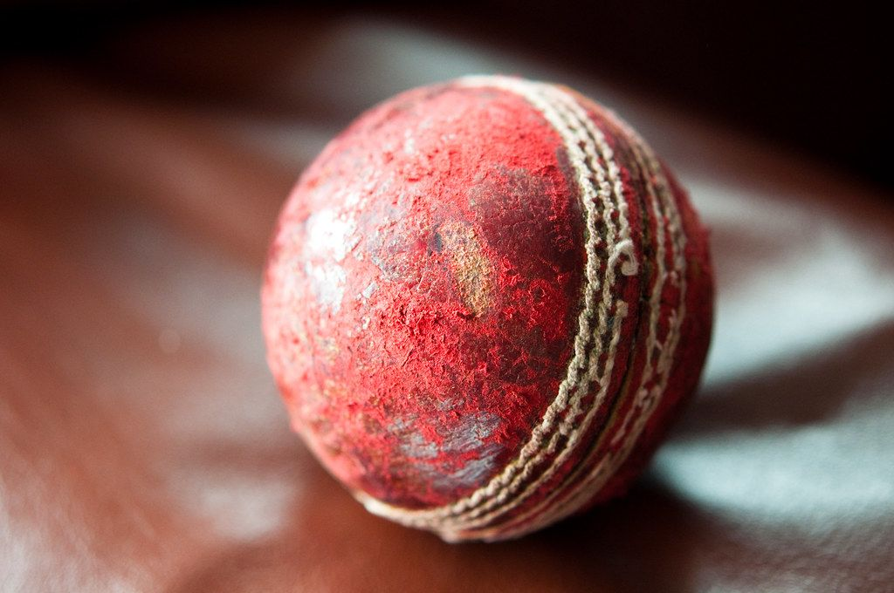

Cricket · London Bridge
Sixes Cricket, London Bridge
- Batting nets with screen-based bowling and automatic scoring, plus a bar and a full kitchen.
- £10 off-peak, £15.75 peak per person. Almost every evening slot is peak.
- Bigger groups get more time at the same price. Twelve people get 90 minutes for what a pair pays for 30.

Photo: Liji Jinaraj / Flickr, CC BY-SA 2.0
What is Sixes Cricket?
A cricket venue built around batting nets. You face virtual bowling projected onto a screen, the system tracks where the ball goes and scores it, and you bat in rotation while everyone else drinks and heckles. There is no fielding, which is the improvement on real cricket.
Three sites: London Bridge, Wembley and Stratford, all of which also have a full bar.
How does it work?
You book a net, and this is where Sixes does something no other venue in this set does. Your session length scales with your group size at the same price per head. A pair gets 30 minutes for £15.75 each. Twelve people get 90 minutes, also £15.75 each.
| Players | Nets | Time you get |
|---|---|---|
| 2 to 3 | 1 | 30 minutes |
| 4 to 5 | 1 | 45 minutes |
| 6 to 9 | 1 | 1 hour |
| 10 to 15 | 1 | 1 hour 30 |
| 16 to 20 | 2 | 1 hour |
| 21 to 30 | 2 | 1 hour 30 |
Same per-person rate at every group size. Verified September 2026.
How much does it cost?
Two rates: £10 off-peak and £15.75 peak, per person, regardless of how long your group's session runs. The catch is when off-peak actually applies.
| Rate | Per person | When it applies |
|---|---|---|
| Off-peak | £10 | Monday to Saturday from 21:00, Saturday and Sunday 10:00 to 11:00, Sunday from 17:00 |
| Peak | £15.75 | Everything else, including every weekday evening |
Figures from the London Bridge site. Off-peak is defined by time of day rather than day of week. Verified September 2026.
What is the food and drink like?
A full kitchen and bar rather than a snack counter, which puts Sixes at the more grown-up end of this set. The menu covers burgers, pizza and sharing plates (arancini, sliders, gyoza, croquettes and churros), and group packages add tiered food and drink bundles with a token system for drinks. Food is ordered around the nets and the venue is set up for people to stay after their session rather than clear out. See the full food and drink menu on Sixes' website.
How do you get there?
Get directions on Google Maps ↗
London Bridge. A short walk from London Bridge station, covering the Jubilee line, the Northern line and the south-eastern mainlines. Easiest of the three for a group arriving from different parts of the city.
Wembley suits north-west London and anyone combining it with a stadium event. Stratford is the smallest site and the best option for east London.
How do you book?
Online, choosing a site, a date, a time and a headcount. The system works out your session length from the group size, so the number you enter changes what you get rather than what you pay each. Groups above 30 book through the events team instead, for large venue hire.
Common questions
- How much is Sixes Cricket?
- £15.75 per person at peak and £10 off-peak. Peak covers almost every evening, so £15.75 is the realistic figure.
- When is off-peak at Sixes?
- Monday to Saturday from 21:00, Saturday and Sunday between 10:00 and 11:00, and Sunday from 17:00.
- When is Sixes London Bridge peak and how much does it cost?
- Peak costs £15.75 per person and applies to everything outside the off-peak windows, including every weekday evening.
- When is Sixes London Bridge off-peak and how much does it cost?
- Off-peak costs £10 per person. It runs Monday to Saturday from 21:00, Saturday and Sunday between 10:00 and 11:00, and Sunday from 17:00.
- How long do you get?
- It depends on your group size, at the same price each. Two or three people get 30 minutes, six to nine get an hour, and ten to fifteen get 90 minutes.
- Do bigger groups pay more?
- Not per person. A group of twelve pays the same per head as a pair, and gets three times the session length.
- Where are the London sites?
- London Bridge, Wembley and Stratford. Stratford is the smallest.
- Do you need to be able to play cricket?
- No. There is no fielding and the bowling is virtual, so it is closer to a batting arcade than a match.
- Can you book a group larger than 30?
- Yes. Sixes runs dedicated large venue hire for groups of 50 to 250, arranged through the events team with tailored food and drink packages, separately from the standard online booking.
You might also like
Similar venues in London
Spotted something wrong on this page: a price, an opening time, a fact that's changed? Tell us and we'll check it.